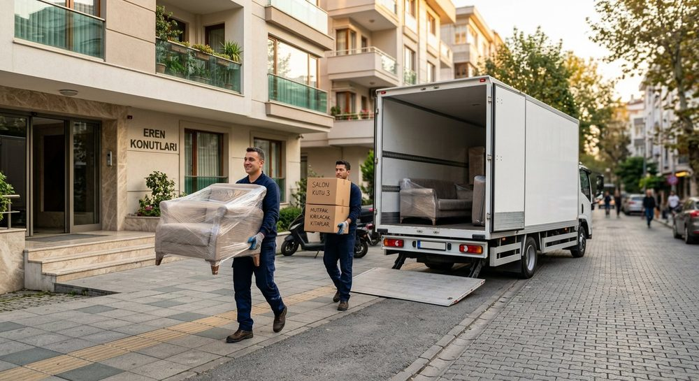

Nizip'de Nakliyat Nasıl İlerliyor?
Nizip merkezdeki 4-8 katlı apartmanlarda bina asansörü genelde dar olduğu için mobilyalar merdivenden çıkamaz. Bu nedenle ilçeye asansörlü araç ile gidiyor, taşımayı tek seferde tamamlıyoruz. Zeugma çevresi, Fırat ve Cumhuriyet mahalleleri en sık hizmet verdiğimiz bölgelerdir.
Nizip, 110 mahallesiyle Gaziantep'in merkez dışındaki en büyük ilçesi ve kendi içinde neredeyse bir şehir gibi çalışıyor. Zeytinyağı ve tarım ekonomisi nedeniyle müstakil ev ile apartman dokusu iç içe geçmiş durumda.
Nizip'de En Sık Karşılaştığımız Taşıma Senaryosu
Nizip'te en çok yaptığımız iş, ilçe merkezindeki apartmandan Gaziantep merkeze taşınma. Genellikle iş veya okul nedeniyle oluyor. Sabah Nizip'te yükleme yapıp öğleden sonra Gaziantep'te boşaltıyoruz; tek günde bitiyor ve ek konaklama masrafı çıkmıyor.
Nizip'e ulaşım ve süre
Nizip'e 45 km mesafede, otoyol bağlantısı sayesinde 40 dakikada ulaşıyoruz. İlçeye gidiş için ek nakliye ücreti almıyoruz.
Nizip'de dikkat ettiğimiz özel durum
Nizip'in köy ve belde adreslerinde (Belkıs, Uluyatır gibi) yollar bazen stabilize oluyor. Bu adreslerde büyük araç yerine daha küçük ve manevra kabiliyeti yüksek araç gönderiyoruz. Keşif sırasında adresin yol durumunu sorup buna göre araç seçiyoruz.
Nizip Taşımalarında Sunduklarımız
- Ücretsiz keşif: Nizip içindeki adresinize gelir, eşyanızı yerinde ölçeriz.
- Sabit yazılı fiyat: Keşifte verilen fiyat taşıma günü değişmez.
- Profesyonel paketleme: Koli, streç, balonlu naylon ve battaniye fiyata dâhil.
- Demontaj + montaj: Mobilya ustalarımız söker ve yeni adresinizde kurar.
- Asansörlü taşıma: Merdiven kullanılmaz, eşya balkondan indirilir.
- Sigorta: Taşıma boyunca eşyalarınız nakliyat sigortası kapsamındadır.
- Nizip - Gaziantep merkez arası aynı gün taşıma
- İlçeye asansörlü araç ile geliş (ek nakliye ücreti yok)
- Köy ve belde adreslerine de servis
Nizip Hangi Mahallelerine Geliyoruz?
Nizip sınırları içindeki tüm mahalle, köy ve beldelere hizmet veriyoruz. En sık taşıma yaptığımız bölgeler:
- Fırat Nakliyat
- Cumhuriyet Nakliyat
- Atatürk Nakliyat
- Mimar Sinan Nakliyat
- Turgut Özal Nakliyat
- Yeni Mahalle Nakliyat
- Zeugma çevresi Nakliyat
- Belkıs Nakliyat
- Uluyatır Nakliyat
Listede göremediğiniz bir mahalle varsa endişelenmeyin: Nizip'in her noktasına aynı fiyat politikası ve aynı ekiple geliyoruz.
Nizip'den Şehirler Arası Taşınma
Nizip'den başka bir şehre taşınıyorsanız eşyalarınız aktarmasız, tek araçla gider. Yeni eviniz hazır değilse eşyanız depomuzda 15 gün ücretsiz bekler. En çok talep gören güzergâhlar:
- Nizip → İstanbul
- Nizip → Ankara
- Nizip → İzmir
- Nizip → Adana
- Nizip → Mersin
- Nizip → Bursa
- Nizip → Antalya
- Nizip → Kayseri
Nizip Nakliyat Fiyatları
Fiyatı belirleyen ana kalemler: eşya hacmi (2+1 / 3+1 / villa), kat ve asansör durumu, mesafe, paketleme kapsamı ve taşınma tarihi. Ay ortası ve hafta içi günlerde taşınabiliyorsanız daha uygun fiyat alabilirsiniz. Detaylı fiyat tablosu için nakliyat fiyatları sayfamıza göz atın veya ücretsiz keşif talep edin.